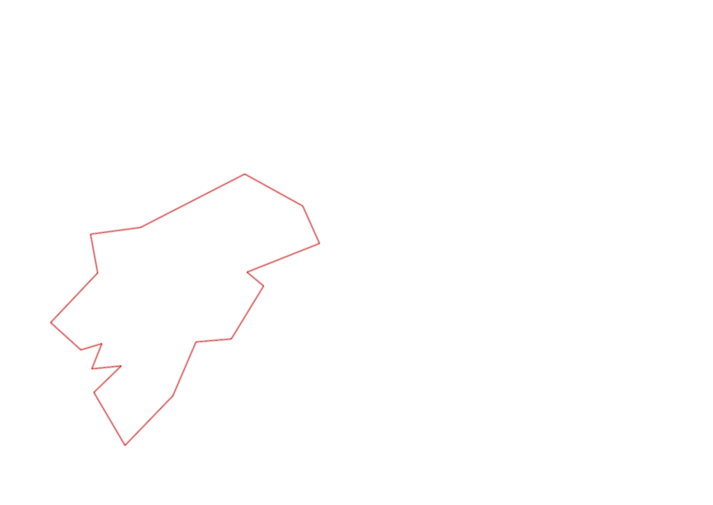
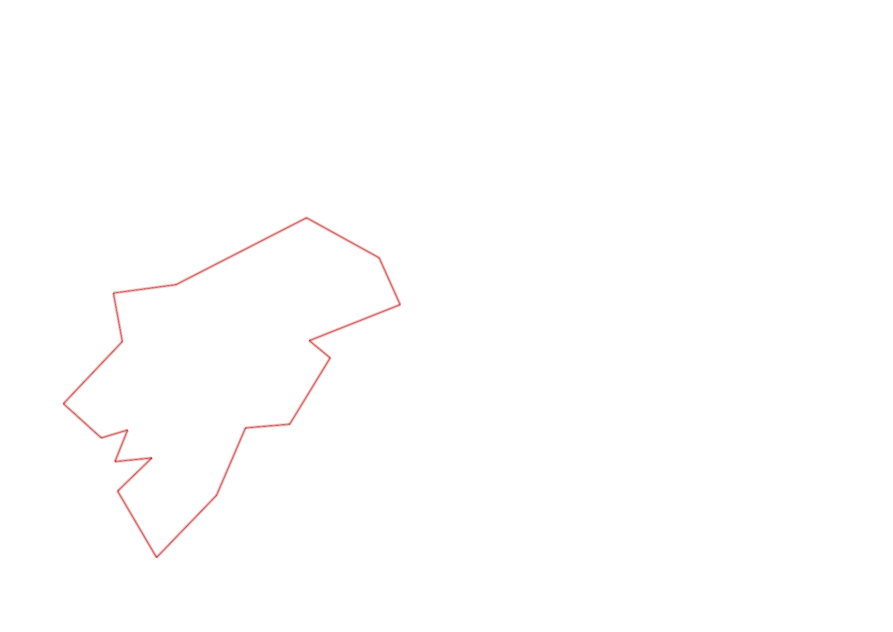

| Control |
Points |
Time Punched |
Distance |
Your Time |
Pace |
Place |
Fastest Time |
Median Time |
% Behind Fastest |
| 127 |
20 |
|
0.06 |
0:00:43 |
11:56 |
20 / 30 |
0:00:01 |
0:00:32 |
4200% |
| 38 |
30 |
|
0.18 |
0:02:32 |
14:04 |
13 / 13 |
0:01:04 |
0:01:50 |
137% |
| 60 |
60 |
|
0.11 |
0:01:24 |
12:43 |
17 / 19 |
0:00:42 |
0:00:57 |
100% |
| 59 |
50 |
|
0.17 |
0:04:41 |
27:32 |
4 / 5 |
0:02:02 |
0:04:13 |
130% |
| 77 |
70 |
|
0.21 |
0:03:39 |
17:22 |
16 / 17 |
0:01:25 |
0:02:33 |
157% |
| 40 |
40 |
|
0.18 |
0:03:57 |
21:56 |
18 / 18 |
0:01:16 |
0:02:38 |
211% |
| 41 |
40 |
|
0.11 |
0:01:43 |
15:36 |
15 / 20 |
0:00:28 |
0:01:07 |
267% |
| 71 |
70 |
|
0.09 |
0:01:13 |
13:31 |
7 / 12 |
0:00:33 |
0:01:12 |
121% |
| 54 |
50 |
|
0.08 |
0:00:52 |
10:50 |
21 / 33 |
0:00:27 |
0:00:45 |
92% |
| 69 |
60 |
|
0.07 |
0:02:20 |
33:19 |
13 / 20 |
0:01:00 |
0:01:56 |
133% |
| 53 |
50 |
|
0.12 |
0:02:24 |
20:00 |
25 / 26 |
0:01:16 |
0:01:51 |
89% |
| 44 |
40 |
|
0.2 |
0:02:19 |
11:35 |
19 / 22 |
0:00:39 |
0:01:40 |
256% |
| 32 |
30 |
|
0.12 |
0:01:47 |
14:51 |
16 / 22 |
0:00:43 |
0:01:19 |
148% |
| 63 |
60 |
|
0.15 |
0:02:07 |
14:06 |
23 / 25 |
0:01:05 |
0:01:29 |
95% |
| 107 |
100 |
|
0.35 |
0:04:11 |
11:57 |
13 / 22 |
0:02:14 |
0:03:49 |
87% |
| 57 |
50 |
|
0.2 |
0:06:10 |
30:50 |
20 / 22 |
0:01:54 |
0:03:53 |
224% |
| 92 |
90 |
|
0.12 |
0:05:37 |
46:48 |
15 / 18 |
0:02:10 |
0:04:22 |
159% |
| Finish |
0 |
|
0.23 |
0:09:12 |
40:00 |
4 / 6 |
0:01:41 |
0:05:45 |
446% |
Total Distance Covered: 2.75km
Points Scored: 910
Late Penalty: 0
Final Score: 910
Total Time: 0hours 56minutes 51seconds
Efficiency: 330.91 points/km
 
